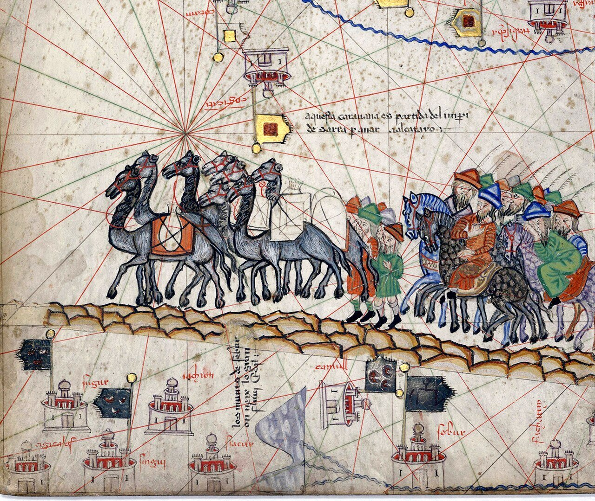
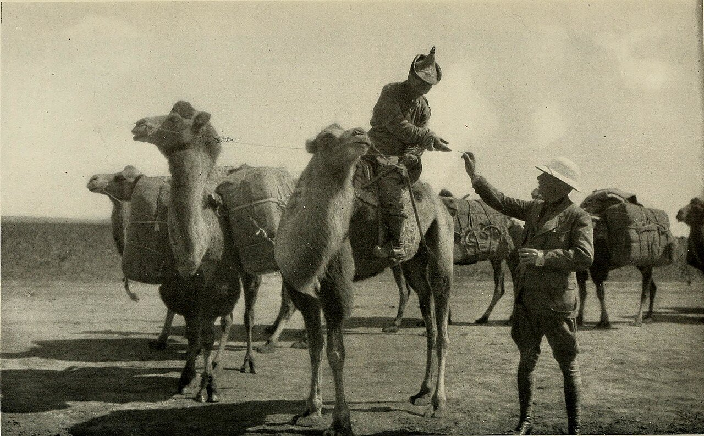
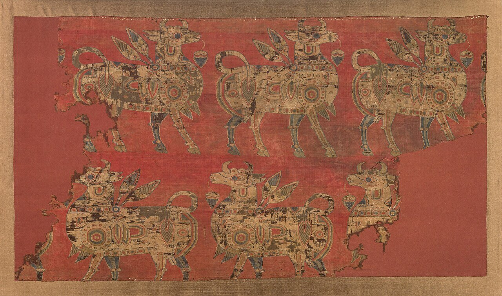
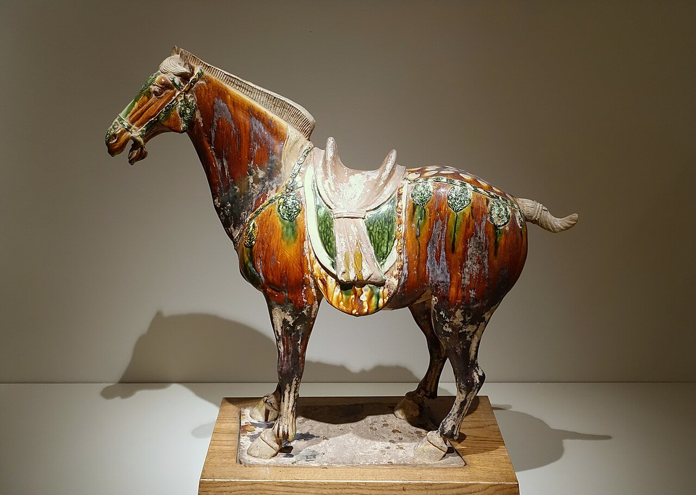
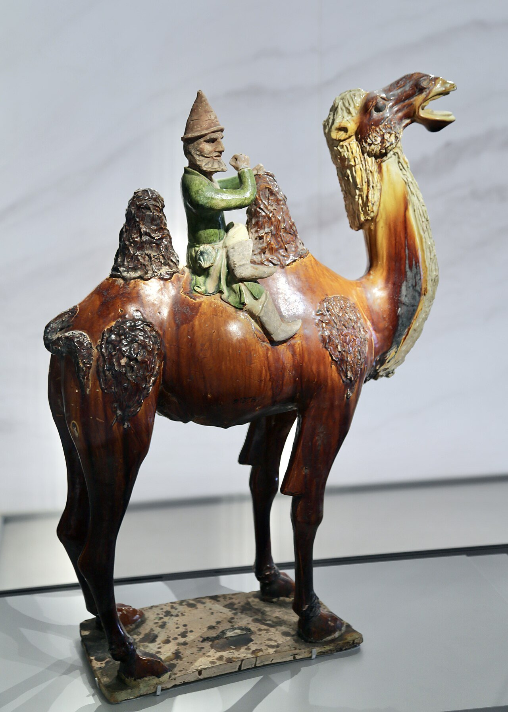
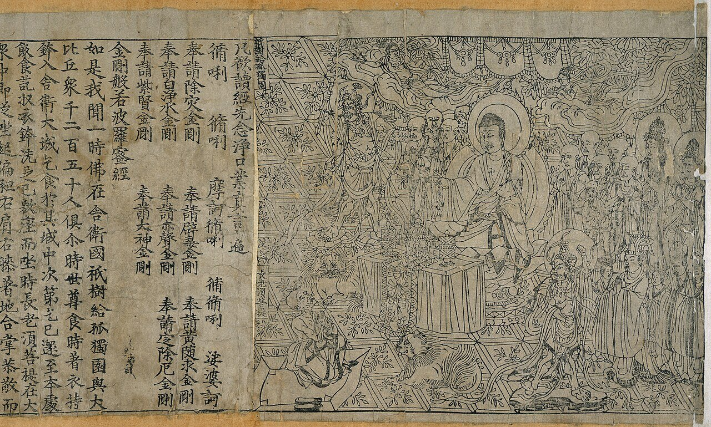
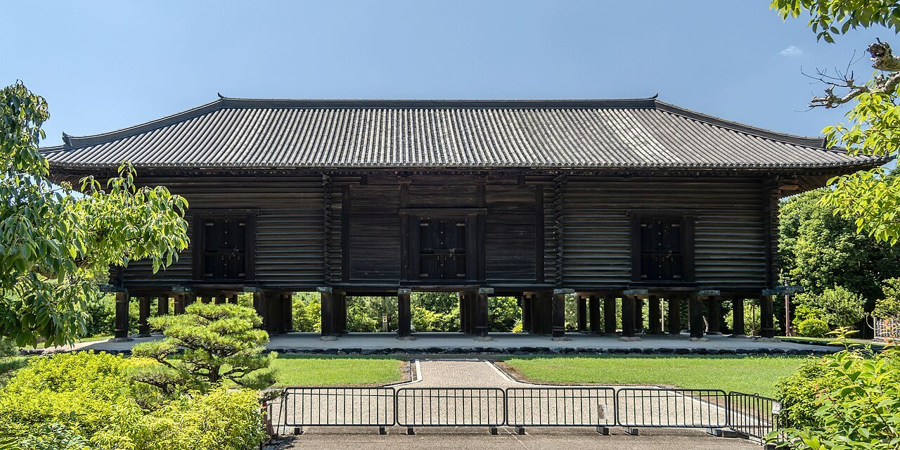
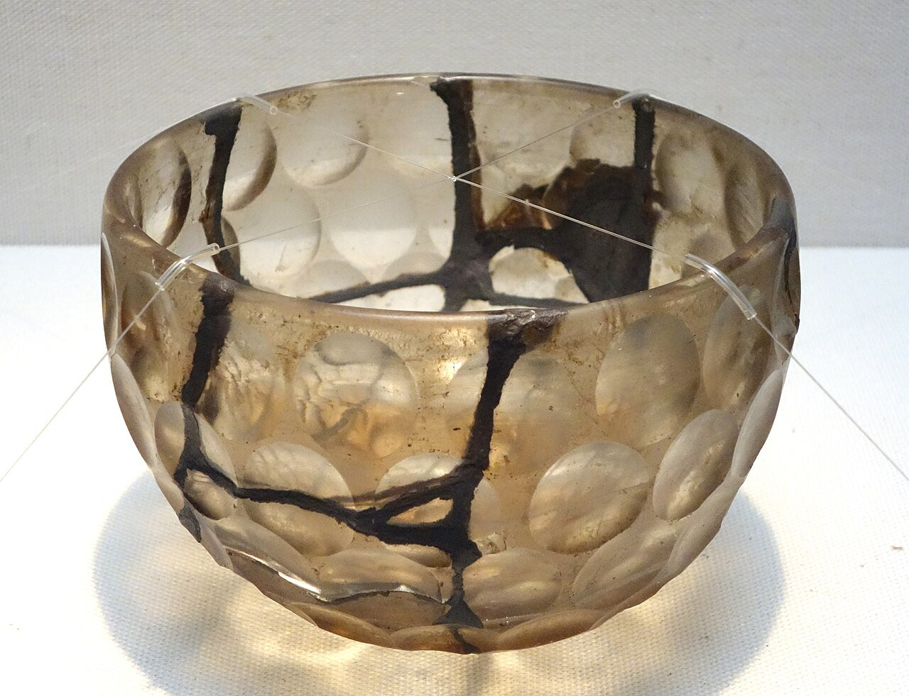

ドイツ、1877年。地理学者のフェルディナント・フォン・リヒトホーフェンは、中国について書いた本などで「ザイデンシュトラーセ」という言葉を使い、この呼び名を広めました。ドイツ語で「絹の道」、英語にすると「シルクロード」です。
いまでは、砂漠を行くラクダの隊列を思い浮かべる人も多いでしょう。けれども、この道で運ばれたものは、絹のほかにもたくさんありました。いったい何が、誰の手で運ばれていたのでしょうか。

「シルクロード」と聞くと、絹を積んだラクダの隊列を思い浮かべます。でも、この道を行き来したのは、馬やガラス、紙、仏教の教え、そして病気まででした。地図と写真で、運ばれたものと運んだ人をたどってみませんか。
ドイツ、1877年。地理学者のフェルディナント・フォン・リヒトホーフェンは、中国について書いた本などで「ザイデンシュトラーセ」という言葉を使い、この呼び名を広めました。ドイツ語で「絹の道」、英語にすると「シルクロード」です。
いまでは、砂漠を行くラクダの隊列を思い浮かべる人も多いでしょう。けれども、この道で運ばれたものは、絹のほかにもたくさんありました。いったい何が、誰の手で運ばれていたのでしょうか。
絹のほかに、馬やガラス、紙などの品物、そして仏教や技術、病気まで。それを、たくさんの商人が町から町へ受け渡して運んだ。
シルクロードは、1本の決まった道ではありません。中国の都・長安（いまの西安）から、中央アジアのオアシスの町をつなぎ、西アジアや地中海へ。いくつもの道が網の目のようにつながった、交通の網でした。陸の道だけで、長さは6,400km以上ともいわれます。
道が開けたきっかけは、紀元前2世紀の漢の時代です。紀元前138年ごろ、皇帝の武帝は、北の遊牧民・匈奴（きょうど）に対抗する仲間を探すため、張騫（ちょうけん）を西へ送りました。張騫は紀元前126年ごろに戻り、西の国々のようすを伝えます。
ただし、長安からローマまで通して旅した商人は、ほとんどいなかったと考えられています。荷物は町から町へ、何人もの商人の手をリレーのように渡っていきました。運び手が替わるたびに、もうけが上乗せされていきます。東のはしで買った絹は、西のはしに着くころには、とても高い品物になっていたのです。

東から西へ運ばれた代表は、絹です。蚕（かいこ）のまゆからとった糸で織る布で、つくり方は長いあいだ中国の外には知られていませんでした。6世紀には、東ローマ帝国の皇帝ユスティニアヌスのもとへ、蚕がひそかに持ちこまれたという話が伝わっています。
西から東へ運ばれたものもあります。漢の武帝がほしがったのは、中央アジアのフェルガナ盆地（いまのウズベキスタンなど）の、背が高く力強い馬でした。「天馬（てんば）」と呼ばれたこの馬を手に入れるため、武帝は遠征軍まで送っています。
紙も、西へ旅をしました。紙は中国で生まれ、105年に蔡倫（さいりん）という役人がつくり方を改良したとされます。8世紀ごろには中央アジアのサマルカンドで紙が使われ、793年には西アジアのバグダッドでも使われていた記録があります。そこからさらに、ヨーロッパへ広がっていきました。


東と西のあいだで、とくに活躍したのがソグド人です。いまのウズベキスタンのサマルカンドあたりを故郷とする人々で、4世紀から8世紀ごろ、東西の交易で大きな力を持っていたとされます。ソグド人の言葉は、中央アジアで商人どうしの共通語のように使われていました。
1907年、探検家のオーレル・スタインが、敦煌の西にあった見張り台の跡から、ソグド語の手紙の束を見つけました。4世紀のはじめ（313年ごろ）に書かれたもので、届けられないまま途中で失われたか、取り上げられた郵便の袋の中身とみられています。
束のうち1通は、中国にいた商人が故郷サマルカンドの仲間にあてて、当時の都・洛陽（らくよう）が攻め落とされたことを伝えたものです。遠く離れた本店へ、商売の知らせを送っていたことがわかります。

道を通ったのは、品物だけではありません。インドで生まれた仏教も、この道を通って中国へ伝わりました。1〜2世紀ごろのことと考えられています。148年には、パルティア（いまのイランのあたり）から来た僧の安世高（あんせいこう）が、経典（仏の教えを書いた本）を中国語に訳し始めたことが記録に残っています。
7世紀には、唐の僧・玄奘（げんじょう）が経典を求めて、この道をインドまで旅しました。たくさんの経典を持ち帰った彼は、物語『西遊記』に出てくる三蔵法師のモデルになった人物です。
西から来た教えは、中国で花開きます。経典をたくさん写して広めるために、中国で生まれた印刷の技術も使われるようになりました。敦煌の石窟（せっくつ）から見つかった、868年の日付が入った『金剛般若経（こんごうはんにゃきょう）』は、年がはっきりわかる印刷された本として、世界でいちばん古いものとされています。

道を旅したのは、ありがたいものばかりではありません。14世紀に大流行したペスト（黒死病）は、中央アジアで始まったという説があり、2022年の研究で注目されました。ヨーロッパでは1346〜1353年に人口の25〜60%が亡くなったと推計され、交易の道が広がりにかかわったという見方があります。
仏教は、さらに東の日本にも伝わりました。756年、聖武天皇が亡くなると、光明皇后は天皇ゆかりの品など600点あまりを東大寺の大仏にささげます。それを納めた倉が正倉院です。宝物の中には、唐だけでなく中央アジアやインド、イランなどから来たものや、その影響を受けたものが含まれています。そのため、奈良をシルクロードの東の終点とみる言い方もあります。

シルクロードの道の一部は、世界遺産にもなっています。2014年に中国からカザフスタン、キルギスにかけての区間が、2023年にはウズベキスタン、タジキスタン、トルクメニスタンにまたがる別の区間が登録されました。
シルクロードが使われていた期間。紀元前2世紀から15世紀のなかばごろまで英語版 Wikipedia「Silk Road」
玄奘がインドへの旅に出てから、経典を持って帰るまでの年月629〜645年ごろ。英語版 Wikipedia
868年の『金剛般若経』の巻物の長さ大英図書館所蔵。英語版 Wikipedia

正倉院の宝物にも、「白瑠璃碗（はくるりのわん）」というササン朝のカットグラスの碗があります。そして、すぐ上の写真の碗とこの白瑠璃碗は、やや飴色がかった色も大きさもほぼ同じで、表面の切子の数と段の数までぴったり一致しているのです。
同じような碗は、いまのイランの北部から多く見つかっています。つまり、ユーラシアの西と東、道の両はしに、そっくりな碗が残っていることになります。どんな道をたどって日本に来たのかはわかっていませんが、砂漠や海をこえ、何人もの手を渡ってきたと考えられます。
割れやすいガラスの器が、はるばる運ばれ、日本で長いあいだ大切に受け継がれてきました。シルクロードが「絹の道」だけではなかったことを、静かに物語っているようです。
秋の奈良で正倉院展のポスターを見かけたら、そこに写る宝物がどんな道を旅してきたのか、Fig.01の地図を思い浮かべてみてください。